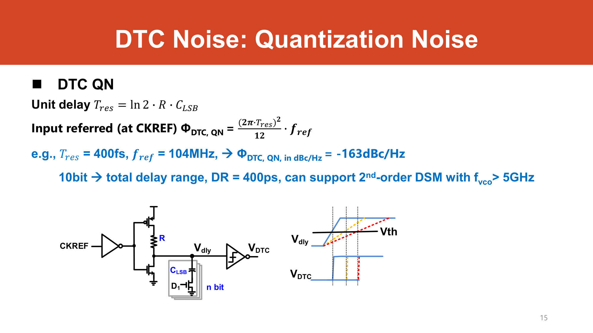
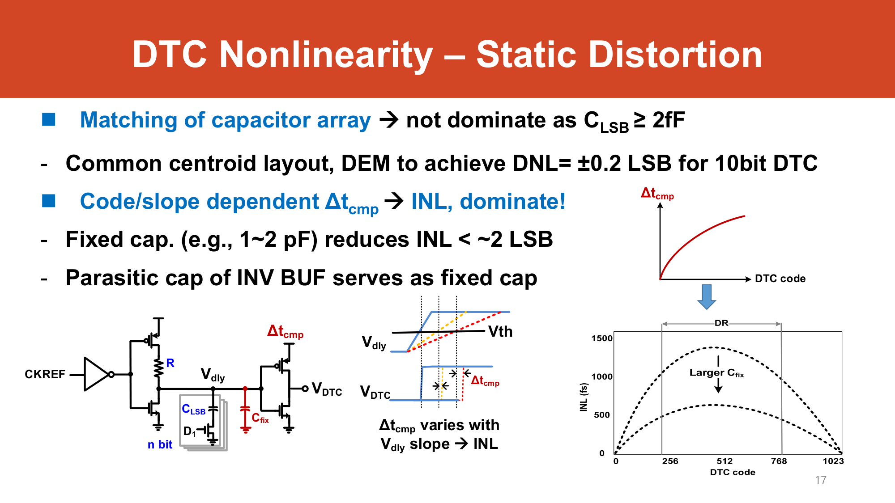
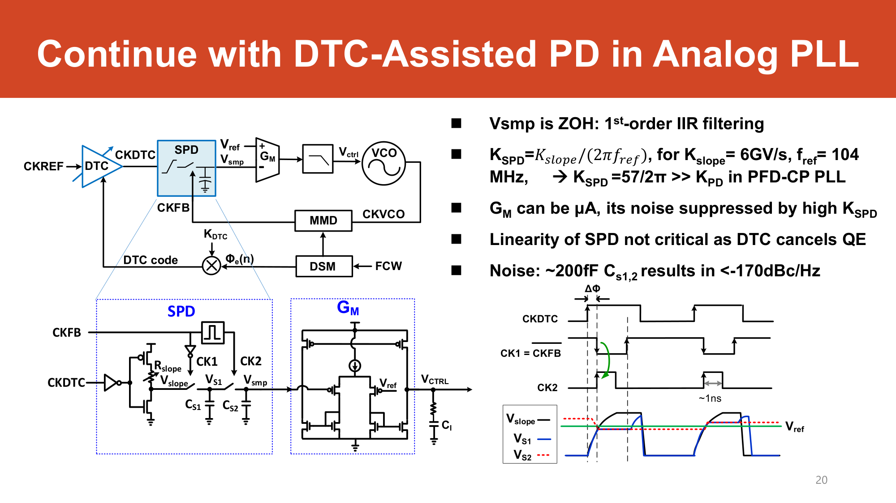
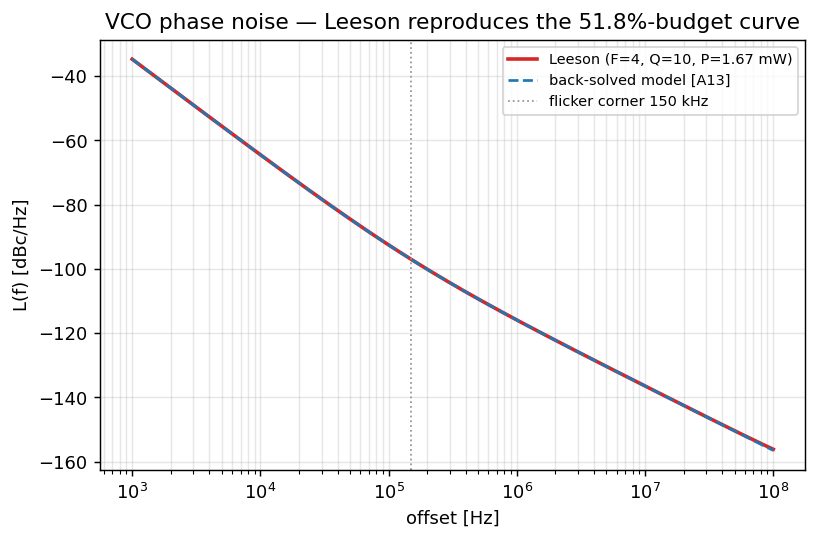
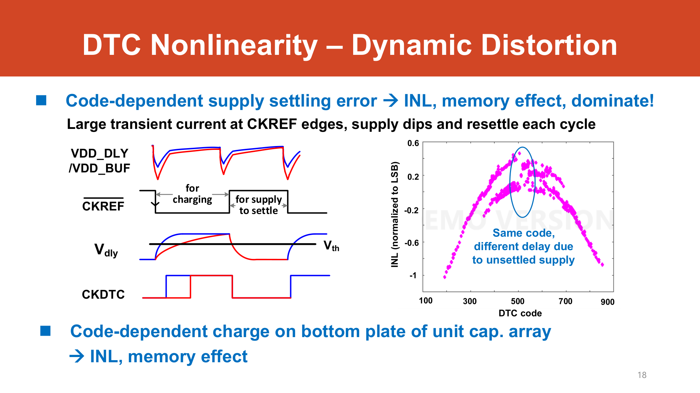

Block Models
A per-block tear-down of the proposed DTC-assisted analog sampling fractional-N PLL — for each block: what it does, its signals, a time-domain and a frequency-domain model, its non-idealities, and exactly how it turns into jitter or spurs.
CKREF → DTC → CKDTC → SPD (slope-gen + sample) → GM → loop filter → dual-core VCO → CKVCO → MMD (÷N) → CKFB,
with a modified ΣΔ-modulator driving the divide value NDIV and the phase select SEL_CKFB.
We walk it block by block in that order: (1) DTC, (2) Sampling PD, (3) GM + loop filter, (4) VCO, (5) MMD divider + modified DSM.
Throughout, $f_\text{ref}=104\text{ MHz}$, $f_\text{out}=6.72\text{ GHz}$, and the divide ratio is
$N = f_\text{out}/f_\text{ref} = 64.62$ derived.
The shared frequency-domain backbone
Before the individual blocks, note that every noise source on this page is shaped by one of two closed-loop transfer functions. With open-loop gain $G_\text{ol}(s)$, the canonical type-II linear PLL model textbook (Gardner / Razavi) derived gives:
$$ H_\text{ref}(s)=\frac{\Phi_\text{out}}{\Phi_\text{ref}} = \frac{N\,G_\text{ol}(s)}{1+G_\text{ol}(s)}\ \text{(low-pass, DC}\to N)\qquad H_\text{vco}(s)=\frac{\Phi_\text{out}}{\Phi_\text{vco}} = \frac{1}{1+G_\text{ol}(s)}\ \text{(high-pass, HF}\to 1) $$Anything entering through the reference path (REF, DTC, SPD, GM, MMD input-referred) is low-pass filtered by $H_\text{ref}$; the VCO is high-pass filtered by $H_\text{vco}$. The crossover sits at the loop bandwidth $f_c$, where the two curves cross — that is the knob that trades reference-domain noise against VCO noise.

frequency_domain_model.py: $H_\text{ref}/N$ (low-pass, reference-domain blocks) and $H_\text{vco}$ (high-pass, VCO). They cross at $f_c\approx1.5$ MHz — derivations §1–2.(1) DTC — RC variable-slope digital-to-time converter
1. Digital-to-Time Converter (RC variable-slope)
Purpose
The DTC sits in the reference path and adds a programmable delay $\Delta t[n]$ to each CKREF edge so that, after lock, the sampling PD sees almost zero phase error — as if the loop were integer-N . In a fractional-N PLL the divider edge CKFB wanders by up to $\pm(\text{order})\cdot T_\text{vco}/2$ relative to CKREF because the divide value toggles; the DTC predicts that wander (it is just the accumulated DSM quantization error $\Phi_\text{QE}[n]$) and delays CKREF by exactly that much, cancelling it. This is what lets the PD be high-gain and small-range → low in-band noise, better linearity, lower power .
Inputs / outputs
- In: CKREF edge (here CKREF×2 → CKREFX2, slide 39); an $n$-bit delay code (main term $K_\text{DTC}\cdot\Phi_\text{QE}[n]$, plus
vco_dccand offset corrections, slide 40). - Out: CKDTC = CKREF delayed by $\Delta t[n]$, feeding the sampling PD.
Time-domain model
A buffer drives a resistor $R$ into a programmable LSB capacitor bank $C_\text{LSB}$, producing a voltage ramp $V_\text{dly}(t)$ that a comparator trips at $V_\text{DD}/2$. The exponential RC ramp crosses the threshold after one "$\ln 2 \cdot RC$" time constant, so the unit delay is :
$$ T_\text{res} = \ln 2 \cdot R\, C_\text{LSB} $$Interactive: where the unit delay comes from
The comparator trips when the RC ramp \(V(t)=V_{\rm DD}(1-e^{-t/RC})\) crosses its threshold, at \(t_{\rm trip}=-RC\ln(1-V_{\rm th}/V_{\rm DD})\). Drag the threshold to \(V_{\rm DD}/2\) and \(t_{\rm trip}\) collapses to exactly \(\ln 2\cdot RC\) — that is why the unit delay is \(\ln 2\,RC\), not arbitrary. Change \(R\) and \(C_{\rm LSB}\) and the readout shows the resulting \(T_{\rm res}\) and DTC-QN floor \(10\log_{10}[(2\pi T_{\rm res})^2/12\cdot f_{\rm ref}]\). model
The realized delay for code $D$ is $\Delta t = D\cdot T_\text{res}$ (staircase). The cancellation relation is $\Delta t[n] = K_\text{DTC}^{-1}\,\Phi_\text{QE}[n]$, with the gain $K_\text{DTC}=T_\text{vco}/\Delta t_\text{DTC}$ expressed in codes per VCO period
Given: the unit-delay law $T_\text{res}=\ln 2\cdot R\,C_\text{LSB}$ , target LSB $T_\text{res}=400$ fs, $n=10$ bits assumption [A6].
Step 1 — a first cut. Try a $R=5\ \text{k}\Omega$ buffer driving a small per-LSB cap $C_\text{LSB}=115\ \text{aF}$ assumption [A7]:
$$ T_\text{res}=\ln 2\cdot R\,C_\text{LSB}=0.6931\times(5\times10^{3})\times(1.15\times10^{-16})=3.99\times10^{-13}\,\text{s}\approx 399\ \text{fs}\ \checkmark $$Step 2 — the noise-driven re-pick. Block-1's thermal floor wants a bigger $C_\text{LSB}$ ($\ge 2$ fF, next example). Keeping $T_\text{res}=400$ fs and fixing $C_\text{LSB}=2$ fF, solve the same equation for $R$ assumption [A7]:
$$ R=\frac{T_\text{res}}{\ln 2\,C_\text{LSB}}=\frac{400\times10^{-15}}{0.6931\times(2\times10^{-15})}=289\ \Omega $$Step 3 — the dynamic range. The total programmable delay is the LSB times the code count $2^{n}$ :
$$ \text{DR}=2^{n}\,T_\text{res}=2^{10}\times 400\ \text{fs}=1024\times400\ \text{fs}=409.6\ \text{ps} $$Sanity check. One VCO period is $T_\text{vco}=1/6.72\,\text{GHz}=148.8$ ps derived, so a 409.6 ps range spans $409.6/148.8\approx 2.75\,T_\text{vco}$ — comfortably more than the $\pm T_\text{vco}$ swing of a 2nd-order (MASH1-1) DSM, which is exactly the slide's claim that a 10-bit / 400 fs DTC "supports a 2nd-order DSM at $f_\text{vco}>5$ GHz" .
Frequency-domain model
The DTC's two white noise floors enter at CKREF and are therefore shaped by $H_\text{ref}$ (low-pass → in-band). Quantization noise (input-referred phase PSD at CKREF) :
$$ \Phi_\text{DTC,QN} = \frac{(2\pi\,T_\text{res})^2}{12}\cdot f_\text{ref} $$Thermal noise floor (delay stage + INV buffer), with slew rate $k_\text{slew}=1/(2RC)$ at $V_\text{DD}/2$ and folded voltage noise $S_v^\text{folded}(f_m)\cong (kT/C)/(f_\text{out}/2)$ :
$$ \mathcal{L}\cong 10\log_{10}\!\Big[\tfrac{1}{2}\Big(\tfrac{2\pi f_\text{ref}}{k_\text{slew}}\Big)^{2} S_v^\text{folded}(f_m)\Big] \;\Longrightarrow\; \mathcal{L}\cong 10\log_{10}\!\Big[\,2kT\,f_\text{ref}\,\Big(\tfrac{2\pi}{\ln 2}\Big)^{2}\frac{2^{n}T_\text{res}^{2}}{C_\text{LSB}}\Big] $$Physically the slew rate converts the sampled $kT/C$ voltage noise into timing jitter $\sigma_t=\sigma_v/k_\text{slew}$, then $(2\pi f_\text{ref})^2$ converts timing to reference phase. Larger $C_\text{LSB}$ ⇒ less $kT/C$ ⇒ lower noise. A floor below the PN target of −171 dBc/Hz needs
Given: the mid-code thermal form $\mathcal{L}\cong 10\log_{10}\!\big[2kT\,f_\text{ref}\,(2\pi/\ln 2)^{2}\,2^{n}T_\text{res}^{2}/C_\text{LSB}\big]$ , with $kT=4.14\times10^{-21}$ J (300 K) textbook, $f_\text{ref}=104$ MHz, $n=10$, $T_\text{res}=400$ fs, $C_\text{LSB}=2$ fF assumption [A6][A7].
Substitute, factor by factor:
$$ 2kT\,f_\text{ref}=2(4.14\times10^{-21})(1.04\times10^{8})=8.62\times10^{-13},\qquad \Big(\tfrac{2\pi}{\ln 2}\Big)^{2}=82.2 $$ $$ \frac{2^{n}T_\text{res}^{2}}{C_\text{LSB}}=\frac{1024\,(400\times10^{-15})^{2}}{2\times10^{-15}}=8.19\times10^{-8} $$ $$ \mathcal{L}=10\log_{10}\!\big(8.62\times10^{-13}\times 82.2\times 8.19\times10^{-8}\big)=10\log_{10}(5.80\times10^{-18})=\mathbf{-172.4\ \text{dBc/Hz}} $$Why "$C_\text{LSB}\ge 2$ fF". Since $\mathcal{L}\propto 1/C_\text{LSB}$, sweeping the cap shows the floor crossing the $-171$ dBc/Hz target right around $1.45$ fF — so $C_\text{LSB}=2$ fF clears it with $\approx 1.4$ dB of margin, reproducing the slide's design rule exactly derived:
| $C_\text{LSB}$ | $\mathcal{L}_\text{thermal}$ |
|---|---|
| 1.0 fF | −169.4 dBc/Hz |
| 1.45 fF | −171.0 dBc/Hz (target) |
| 2.0 fF | −172.4 dBc/Hz |
| 3.0 fF | −174.1 dBc/Hz |
Sanity check. Using the same $T_\text{res}=400$ fs, the DTC's quantization floor is $-162.6$ dBc/Hz (block-1 box) derived. The thermal floor at $-172.4$ sits $\approx 9.7$ dB below it — so quantization noise, not thermal, sets the DTC's white floor at this design point, which is why the QN number is the one the slide leads with.
Dynamic range and the range/noise/power tradeoff
$$ \text{DR}=2^{n}\cdot t_\text{res}=2^{n}\ln 2\,R\,C_\text{LSB},\qquad \mathcal{L}\cong 10\log_{10}\!\Big[2kT f_\text{ref}\tfrac{(2\pi)^2}{\ln 2}\,\text{DR}\cdot R\Big],\qquad \text{QN}\propto t_\text{res}^2,\quad P_\text{DTC}\propto \text{DR}^2 $$A 10-bit DTC ($n=10$) with $t_\text{res}=400$ fs gives $\text{DR}=400$ ps, enough to cover a 2nd-order DSM at $f_\text{vco}>5$ GHz . Because noise rises with DR and power as DR$^2$ , shrinking the range is a free win on every axis — which is the entire motivation for the ½-range (slide 34) and 1/8-range (slide 38) techniques covered with the divider below.
Main non-idealities → spur mechanism
- Static INL (parabolic): code/slope-dependent comparator trip time bends the staircase. A fixed-cap array gives <2 LSB INL; DEM brings DNL to ±0.2 LSB at 10-bit . The INL repeats with the DSM's periodic $\Phi_\text{QE}[n]$, so it folds into discrete fractional spurs.
- Dynamic INL (memory): per-cycle supply settling makes the delay depend on the previous code — a memory effect, measured at ±0.6 LSB scatter . Hard to model exactly; mitigated by a master-slave regulator + bleeding current and a code reset to "1" each cycle .


(2) Sampling Phase Detector (SPD)
2. Sampling PD (slope-generator + sample/hold)
Purpose
Replaces the PFD + charge-pump with a sample-and-hold on a voltage slope, giving a much higher phase-detector gain $K_\text{SPD}$ so that downstream GM/comparator noise is suppressed and the in-band floor drops below −170 dBc/Hz .
Inputs / outputs
- In: CKDTC (delayed reference edge) gates a slope generator; CKFB sets the sample instant.
- Out: a held voltage $V_\text{smp}$ proportional to the residual phase error, sent to the GM.
Time-domain model
The CKFB edge samples a voltage ramp of slope $K_\text{slope}$; the sampled value is held until the next cycle, i.e. a zero-order hold. A phase error $\varphi$ at the reference is a time error $\varphi/(2\pi f_\text{ref})$, which the slope turns into a voltage $K_\text{slope}\,\varphi/(2\pi f_\text{ref})$. Hence the gain :
$$ K_\text{SPD} = \frac{K_\text{slope}}{2\pi\,f_\text{ref}} $$Frequency-domain model
Because $V_\text{smp}$ is a ZOH updated once per reference cycle, the SPD behaves as a first-order IIR filter inside the loop . For $f\ll f_\text{ref}/2$ we approximate the sampled path by its continuous-time equivalent $K_\text{SPD}\cdot \tfrac{1}{1+s/\omega_\text{IIR}}$, with $\omega_\text{IIR}$ near $f_\text{ref}\times$(loop gain); a fully rigorous treatment is in the z-domain derived textbook (sampled-data PLL). The input-referred SPD+GM noise is white and enters at the reference, so it is low-pass shaped by $H_\text{ref}$.
Non-idealities → jitter mechanism
- Comparator/GM offset: a static offset shifts the mean of the 1-bit error $e[k]=\operatorname{sign}(\text{PHE})$ away from zero, which biases the sign-LMS calibrations . A 1-bit ΔV-DAC on $V_\text{ref}$ nulls it (the offset cal) .
- SPD+GM thermal floor: contributes the "SPD+GM" slice of the budget — about 3.9% of total jitter variance, suppressed by the large $K_\text{SPD}$ .

(3) GM transconductor + loop filter
3. GM + type-II loop filter
Purpose
The transconductor (GM) converts the held SPD voltage into a current that charges the loop-filter capacitors, producing the VCO control voltage(s). With the dual-path VCO it drives both a proportional node $V_\text{ctrl,P}$ and an integral node $V_\text{ctrl,I}$ (slide 39) — together a type-II loop (zero + pole) .
Inputs / outputs
- In: $V_\text{smp}$ (relative to $V_\text{ref}$) from the SPD.
- Out: $V_\text{ctrl,P}$ / $V_\text{ctrl,I}$ to the dual-core VCO.
Time-domain model
GM is a voltage-controlled current source $i = g_m\,(V_\text{smp}-V_\text{ref})$, integrated onto the loop capacitors. Note the GM can be µA-level because its noise is suppressed by the high $K_\text{SPD}$ ahead of it .
Frequency-domain model
The loop filter sets $G_\text{ol}(s)$. For the type-II shape used in the model, with a zero $\omega_z$ (proportional path) for phase margin and a pole $\omega_p$ to clean HF ripple textbook (Gardner) derived:
$$ G_\text{ol}(s)=K_\text{loop}\,\frac{1+s/\omega_z}{s^{2}\,(1+s/\omega_p)},\qquad \text{PM}=180^\circ+\angle G_\text{ol}(j\omega_c),\quad \omega_c=\sqrt{\omega_z\omega_p}\ \text{(max PM)} $$The two poles at the origin are the VCO integrator plus the loop integrator (the $V_\text{ctrl,I}$ path). With the design knobs $f_c=1.5$ MHz, PM $=60^\circ$ assumption [A1][A2], the model measures $f_c=1.501$ MHz derived. Loop-filter / PD-output-referred noise sees a band-pass $(K_\text{vco}/s)/(1+G_\text{ol})$ derived.
Non-idealities → jitter mechanism
- GM thermal/flicker noise: injected after the SPD; it is divided down by $K_\text{SPD}$ when input-referred, so it is a small slice (bundled into the "SPD+GM" ≈ 3.9% of the budget) .
- Loop-filter resistor noise: band-pass shaped around $f_c$; folded into the type-II response above.
docs/assumptions.md [A1][A2] to hit $f_c=1.5$ MHz and PM $60^\circ$; treat them as a
representative design, not a slide fact.
(4) VCO (dual-core LC)
4. Voltage-Controlled Oscillator
Purpose
Generates the 6.72 GHz output. As a phase block it is a pure integrator: control voltage → output frequency → output phase. It is the dominant noise contributor at ≈51.8% of the jitter budget .
Inputs / outputs
- In: $V_\text{ctrl,P}$ / $V_\text{ctrl,I}$.
- Out: CKVCO at $f_\text{out}=6.72$ GHz, divided down by the MMD.
Time-domain / frequency-domain model
Frequency is $f=f_0+K_\text{VCO}\,V_\text{ctrl}$ (with $K_\text{VCO}$ in Hz/V); phase is the integral of frequency, so the small-signal phase transfer is an integrator derived textbook:
$$ \frac{\Phi_\text{vco}(s)}{V_\text{ctrl}(s)} = \frac{2\pi\,K_\text{VCO}}{s} = \frac{K_\text{vco}}{s}\quad(K_\text{vco}\text{ in rad/s/V}) $$Its own (free-running) phase noise is the white-FM $-20$ dB/dec slope plus a $1/f^3$ flicker region. Through the loop it is high-pass filtered:
$$ H_\text{vco}(s)=\frac{1}{1+G_\text{ol}(s)}\quad\Rightarrow\quad \text{LF: suppressed }(\to 0),\ \ \text{HF: passes }(\to 1) $$So the loop scrubs close-in VCO noise up to $f_c$ and lets far-out VCO noise through — the classic reason a higher $f_c$ helps VCO noise but hurts reference-domain noise derived.
assumptions.md [A13] to reproduce the slide-42 split (VCO ≈ 51%); the slides give the percentage, not the raw
curve assumption [A13].
Non-idealities → jitter mechanism
- VCO duty-cycle error: if the duty cycle ≠ 50%, the two VCO phases used for the ½-range divider are not exactly $T_\text{vco}/2$ apart, $\Delta t_\text{err}=\Delta t-T_\text{vco}/2\neq0$. This injects a
SEL_CKFB-correlated error that corrupts $K_\text{DTC}$ and re-creates a spur ; thevco_dccsign-LMS removes it (see block 5) . - VCO phase noise: the largest single slice of the budget (≈51.8%) — high-pass shaped, dominant beyond $f_c$.
(5) MMD divider + modified ΣΔ (DSM)
5. Multi-Modulus Divider + modified DSM (½-range)
Purpose
The MMD divides CKVCO by $/N$ or $/N{+}1$ under control of a modified MASH ΣΔ-modulator to realize the fractional
ratio. The "modified" part also drives SEL_CKFB to pick between two VCO phases, halving the residual
quantization-error range the DTC must cover .
Inputs / outputs
- In: CKVCO; the fractional control word (here $\text{FCW}'=\text{FCW}+\texttt{ckref\_dcc}$, slide 40).
- Out: CKFB to the SPD; the divide sequence $N_\text{DIV}$; the phase select $\text{SEL\_CKFB}\,(\pm1)$; the accumulated quantization error $\Phi_\text{QE}[n]$ that the DTC cancels.
Time-domain model — DSM quantization-error range
The MASH order sets how far CKFB wanders, i.e. how much DTC range is needed :
| MASH order | QE range $\Phi_e$ |
|---|---|
| MASH1 | $[-T_\text{vco}/2,\,+T_\text{vco}/2]$ |
| MASH1-1 | $[-T_\text{vco},\,+T_\text{vco}]$ |
| MASH1-1-1 | $[-2T_\text{vco},\,+2T_\text{vco}]$ |
The ½-range trick: switching CKFB1 → CKFB2 (= CKFB1 delayed by ½$T_\text{vco}$) via SEL_CKFB folds the QE
into $\Phi_e\in[0,\,0.5\,T_\text{vco}]$ instead of $[-T_\text{vco}/2,+T_\text{vco}/2]$ — half the range, hence (from block 1)
lower noise, power, and INL .
Frequency-domain model — DSM noise shaping
A MASH-$m$ modulator produces high-pass-shaped quantization noise at the divider input textbook (Riley, JSSC 1993):
$$ S_{Q,\text{DSM}}(f)=\frac{1}{12}\cdot\frac{1}{f_\text{ref}}\big[\,2\sin(\pi f/f_\text{ref})\,\big]^{2m} $$Referred to output phase it is multiplied by $(2\pi)^2$ (cycles → rad) and then low-pass filtered by the loop — the classic "DSM hump." But the DTC cancels the in-band accumulated part (slide 9), so the residual collapses to ≈0% of the budget (the model applies an ~80 dB cancellation factor) derived.
The cancellation chain (LMS, slide 40)
Three sign-LMS integrators share the 1-bit error $e[k]=\operatorname{sign}(\text{PHE})$ textbook (Widrow & Stearns):
Final code: $\text{DTC code}=\operatorname{quantize}\!\big(K_\text{DTC}\,\Phi_e[n]+\texttt{vco\_dcc}+\texttt{offset}\big)$, all converging in <30 µs even with 20 ps VCO duty error, 32 mV comparator offset, and a 1 ns (57%) CKREF duty error injected .
Non-idealities → spur mechanism
- Uncancelled DSM QE: would show as a fractional-spur hump; suppressed to ≈0 by the DTC + cals.
- MMD input-referred noise: the divider's own thermal/flicker, the "MMD" slice ≈ 6.2% of the budget — distinct from DSM QN .
- VCO / CKREF duty errors: create
SEL_CKFB- / even-cycle-correlated tones; removed byvco_dcc/ckref_dccabove.
Putting the blocks together: the budget they produce
Stacking each block's input-referred PSD through its NTF gives the output phase-noise budget below, which reproduces slide 42.
The integrated jitter is 87.6 fs model ≈ 87.5 fs ,
with IPN $-51.6$ dBc model ≈ $-51.7$ dBc
(SSB convention $\mathrm{IPN}=10\log_{10}(\tfrac{1}{2}\sigma_\phi^2)$, matching utils.ipn_dbc ssb=True).
| Block | Budget share | Shaped by | Dominant mechanism |
|---|---|---|---|
| VCO | 51.8% | $H_\text{vco}$ (high-pass) | free-running $1/f^2$/$1/f^3$ PN beyond $f_c$ |
| REF + DTC | ~37.8% | $H_\text{ref}$ (low-pass) | CKREF floor/flicker + DTC QN (−163) & thermal (−171) |
| MMD | 6.2% | $H_\text{ref}$ | divider input-referred thermal/flicker |
| SPD + GM | 3.9% | $H_\text{ref}$ | SPD/GM floor, suppressed by $K_\text{SPD}$ |
| DSM-QN | ~0.3% | $H_\text{ref}$ × $(1{-}z^{-1})^m$ | cancelled by DTC (slide 9) |

frequency_domain_model.py — VCO high-pass, all reference-domain blocks low-pass, DSM-QN suppressed. Reproduces slide 42 (TOTAL 87.6 fs, IPN −51.6 dBc).docs/slide_inventory.md,
docs/derivations.md (§1–9). Model: models/frequency_domain_model.py
(NTFs, jitter budget). Standard theory named inline (Gardner, Razavi, Bennett, Riley JSSC 1993, Widrow & Stearns).
Self-check
Show answer
Show answer
(A) VCO phase noise — Leeson
The VCO is the single biggest slice of the jitter budget (51.8%, slide 42), and beyond the loop bandwidth it is the output noise (high-pass $H_\text{vco}\to1$). Leeson's model is the one-line equation every analog designer carries in their head: it tells you the three regions of a VCO's skirt, where they break, and which knobs (resonator $Q$, power $P_\text{sig}$, device $F$, core count) move them.
The intuition first
A free-running oscillator is a resonator (tank, $Q$) sustained by an active device that injects noise. Two things happen to that noise: (1) the tank's frequency-selective phase response converts close-in noise into phase noise with a $1/f_m^2$ slope (the noise has nowhere to go but to wander the phase), and (2) the device's own flicker (1/f) noise up-converts to add a steeper $1/f_m^3$ region close to the carrier. Far out, the tank filtering is done and you hit a flat thermal floor. Three regions, two corners — that is the whole story.
The equation
Leeson's phase-noise model, in the exact form coded in extras.py::leeson_L
textbook (Leeson 1966) model:
Read it left to right: $2FkT/P_\text{sig}$ is the thermal floor ($F$ = device excess-noise factor, $P_\text{sig}$ = carrier power in the tank); the bracket $[1+(f_0/2Q\,f_m)^2]$ is the tank's $1/f_m^2$ shaping that dominates inside the $f_0/2Q$ corner; and $(1+f_c/f_m)$ adds the device flicker $1/f_m^3$ region inside the flicker corner $f_c$.
The three regions and two corners
| region | slope | which term dominates | break point |
|---|---|---|---|
| close-in | $1/f_m^3$ (−30 dB/dec) | $(1+f_c/f_m)\!\cdot\!(f_0/2Qf_m)^2$ | below flicker corner $f_c$ |
| mid-band | $1/f_m^2$ (−20 dB/dec) | $(f_0/2Qf_m)^2$ only | $f_c < f_m < f_0/2Q$ |
| far-out | flat (0 dB/dec) | thermal $2FkT/P_\text{sig}$ | above $f_0/2Q$ corner |
The $1/f^2 \to$ floor corner sits at $f_m=f_0/2Q$ — a higher-$Q$ tank pushes that corner in (steeper region is shorter) and lowers the whole $1/f^2$ region. The flicker corner $f_c$ is set by the device and the bias.
extras.py::leeson_L(1e6), which the back-solved budget model in frequency_domain_model.py matches).
At $f_m=1$ MHz we are well above $f_c=150$ kHz but below the corner $f_0/2Q = 6.72\text{ GHz}/20 = 336$ MHz, so we are
squarely in the $1/f^2$ region — exactly where the loop hands off to the VCO at $f_c\approx1.5$ MHz.
Show the algebra — evaluating Leeson at 1 MHz
Plug in $kT=4.14\times10^{-21}$ J (300 K), $F=4$, $P_\text{sig}=1.67$ mW:
$$ \frac{2FkT}{P_\text{sig}}=\frac{2\cdot4\cdot4.14\times10^{-21}}{1.67\times10^{-3}}=1.98\times10^{-17}\ \text{(/Hz)} $$ $$ \left(\frac{f_0}{2Q f_m}\right)^2=\left(\frac{6.72\times10^{9}}{2\cdot10\cdot10^{6}}\right)^2=(336)^2=1.13\times10^{5} $$ $$ 1+\frac{f_c}{f_m}=1+\frac{150\text{ kHz}}{1\text{ MHz}}=1.15 $$ $$ \mathcal{L}=10\log_{10}\!\big(1.98\times10^{-17}\cdot1.13\times10^{5}\cdot1.15\big) =10\log_{10}(2.57\times10^{-12})\approx \mathbf{-115.9\ \text{dBc/Hz}} $$(leeson_L lands at −115.9 dBc/Hz here; the budget model instead uses the back-solved VCO level −116.5 dBc/Hz [A13] — a ~0.6 dB gap between the Leeson curve and the fitted budget floor, not a rounding artifact.) derived
VCO figure-of-merit
To compare oscillators across frequency and power, normalize Leeson out: the VCO FoM textbook model is
$$ \text{FoM}_\text{VCO}=\mathcal{L}(f_m)+20\log_{10}\!\left(\frac{f_m}{f_0}\right)-10\log_{10}\!\left(\frac{P}{1\,\text{mW}}\right) $$The $20\log_{10}(f_m/f_0)$ removes the $1/f_m^2$ slope and the carrier-frequency dependence; the $-10\log_{10}(P/1\text{mW})$ removes the power dependence (lower/more-negative FoM is better). Two VCOs with the same FoM trade phase noise against power one-for-one — which is exactly the lever the multi-core trick pulls.
Multi-core scaling
Running $N_\text{core}$ identical VCO cores in phase-lock averages their uncorrelated noise: the phase noise drops by
$$ \Delta\mathcal{L}=-10\log_{10}(N_\text{core})\ \text{dB, at }N_\text{core}\times\text{ the power.} $$So the dual-core VCO in this design buys $-10\log_{10}(2)=\mathbf{-3\ \text{dB}}$ of phase noise at $2\times$ power model — and because FoM has both a $\mathcal{L}$ term (−3 dB) and a $-10\log_{10}(P)$ term (+3 dB), FoM is unchanged. Multi-core is a way to spend power to hit a phase-noise spec the single core cannot, not a way to improve the fundamental oscillator efficiency.

extras.py::leeson_L — the $1/f^2$ region passes through
−116.5 dBc/Hz @ 1 MHz and the $1/f^2\!\to$floor corner is at $f_0/2Q=336$ MHz.Show answer
(B) DTC non-idealities in depth
Block 1 showed the DTC's two white noise floors (quantization −163, thermal −171). The harder limits are its nonlinearities, because they fold the periodic DSM word $\Phi_\text{QE}[n]$ into discrete spurs rather than a benign floor. There are two flavors, and they need opposite fixes: static mismatch (fixed by DEM / common-centroid) and dynamic memory (which a static NLC cannot touch).
B.1 Static DNL → DEM and common-centroid
The mechanism
The DTC's delay is set by a binary/thermometer capacitor bank $C_\text{LSB}$ (block 1). Fabrication makes the unit caps mismatch, so the realized delay vs. code is not a perfect staircase: code-to-code DNL errors and an overall INL bow. Because the DTC is driven by the periodic accumulated DSM word $\Phi_\text{QE}[n]$ (it sweeps the same codes in the same order every fractional cycle), a fixed code-dependent error becomes a code-correlated, periodic timing error — i.e. it lands at discrete fractional-spur frequencies, not in a smooth floor .
The fix: DEM / common-centroid
Two complementary techniques attack the static error:
- Common-centroid layout arranges the unit caps symmetrically about a shared center so that linear process gradients (oxide thickness, doping) cancel to first order — it shrinks the systematic INL bow before any calibration.
- DEM (Dynamic Element Matching) shuffles which physical unit caps realize a given code from cycle to cycle. The same code no longer maps to the same physical error every time, so the error stops being correlated with the periodic $\Phi_\text{QE}[n]$. DEM does not remove the mismatch energy — it converts a fixed code-correlated spur into shaped / randomized noise (spread across frequency, or noise-shaped out of band), which is far easier to live with than a tone .
B.2 Dynamic INL → the memory effect (and why static NLC fails)
The mechanism
The nastier non-ideality is dynamic: it depends not on the current code $D[n]$ but on the change in code. When the DTC code jumps, the supply / bias rails (and the RC ramp's starting condition) have not fully settled from the previous cycle — so the realized delay is pulled by the previous code. This is a classic memory effect, and a compact model is a one-tap memory polynomial model:
$$ \Delta t_\text{mem}[n]\ \approx\ \beta\,\big(D[n]-D[n-1]\big)\,e^{-T_\text{ref}/\tau} $$where $\beta$ scales the code-step coupling and $\tau$ is the supply/bias settling time constant; the factor $e^{-T_\text{ref}/\tau}$ is how much of last cycle's disturbance survives into this one. Two consequences:
- The error depends on $D[n]-D[n-1]$, i.e. on the DSM's step pattern — so it too is code-correlated and produces spurs, but at different offsets than the static INL (the step sequence has its own spectrum).
- It is history-dependent: the same code $D[n]$ gives a different delay depending on what preceded it.

Why a static NLC cannot correct it
Show the algebra — static map vs. memory map
A memoryless NLC builds an estimate $\hat{\Delta t}[n]=f(D[n])$ from $D[n]$ alone. The best it can do against a memory error is project onto the present sample: write $D[n-1]=D[n]-\Delta D[n]$, so
$$ \Delta t_\text{mem}[n]=\beta\,\Delta D[n]\,e^{-T_\text{ref}/\tau}, \qquad \Delta D[n]=D[n]-D[n-1]. $$$\Delta D[n]$ is (to first order) uncorrelated with $D[n]$ for a high-order DSM whose increments are near-white. Hence $E\{\Delta t_\text{mem}\,\cdot\,g(D[n])\}\to0$ for any static basis $g(\cdot)$ — the LMS gradient that trains the NLC sees no correlation to grab onto. The residual is irreducible under a memoryless model; only a regressor containing $D[n-1]$ has nonzero correlation with $\Delta D[n]$.
derived — memoryless basis is orthogonal to the code-difference term.
Show answer
Show answer
Show answer
SEL_CKFB, folding the MASH1 range into $\Phi_e\in[0,\,0.5\,T_\text{vco}]$ — half the range, hence lower DTC noise, power, and INL .